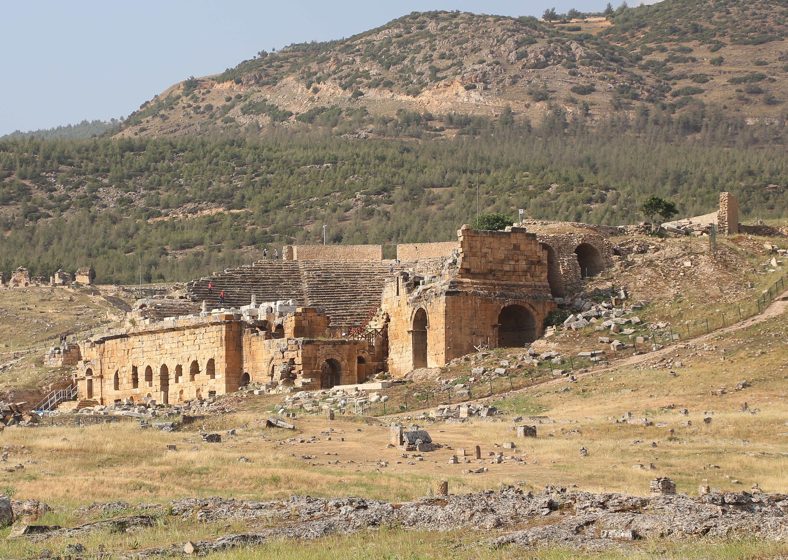

Hierapolis

- Find Name
- Hierapolis
- Description
- The 'sacred city' of the Lycus Valley, excavated by the Italian mission from 1957: a superbly preserved Roman theatre, the white travertine terraces of its hot springs, a vast necropolis, and the Plutonium — the cave sanctuary over a fault venting carbon dioxide, where Strabo and Pliny describe priests staging oracles and bull sacrifices at what was regarded as an entrance to the underworld. Early tradition places the apostle Philip's martyrdom and burial here, and a martyrium and tomb on the hill are shown as his, though that identification is traditional rather than proven.
- Historical Period
- Roman
- Evidence Class
- Contextual
- Interpretations
- The site, the Plutonium, and the theatre are secure. The Philip martyrium tradition is early but not contemporary evidence, and Paul is not recorded as visiting Hierapolis; the church there is inferred from Colossians 4:13 and Epaphras's work, not from a visit narrative. No profile link is made to Philip here, since the tradition does not specify which Philip with certainty.
- Alternative Names
- Hierapolis-Pamukkale
- Related Places
- Related Books
- Related People
- Scripture Illuminated
- Biblical Significance
- Hierapolis is named once in Scripture, in Colossians 4:13, where Paul testifies that Epaphras 'hath a great zeal for you, and them that are in Laodicea, and them in Hierapolis' — one of the three Lycus Valley churches in Epaphras's care, alongside Colossae and Laodicea. Its hot springs also complete the geography behind Laodicea's 'lukewarm' rebuke: Hierapolis had the hot water, Colossae the cold, Laodicea neither.
- Artifact Date
- 1st-2nd century AD (theatre rebuilt under Hadrian after the AD 60 earthquake)
- Current Location
- In situ, Hierapolis-Pamukkale archaeological site
- Date Discovered
- 1957
- Discovery Location
- Pamukkale, Denizli Province, Turkey
- Timeline Era
- Early Church
Awaiting Review Not yet checked against scholarly sources. Treat its claims as provisional until this entry is reviewed. About verification
Last reviewed: not yet reviewed